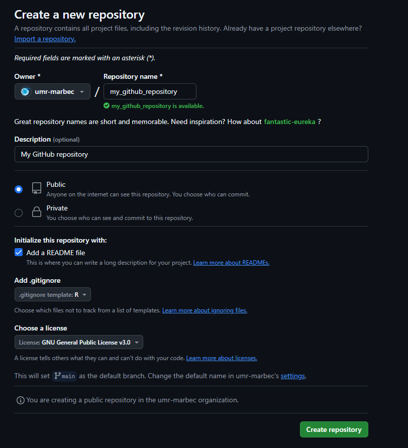
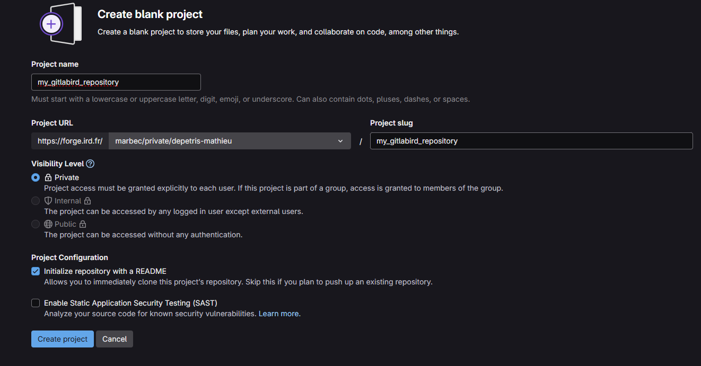
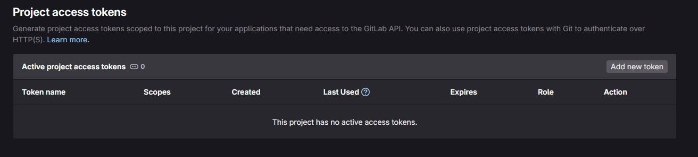
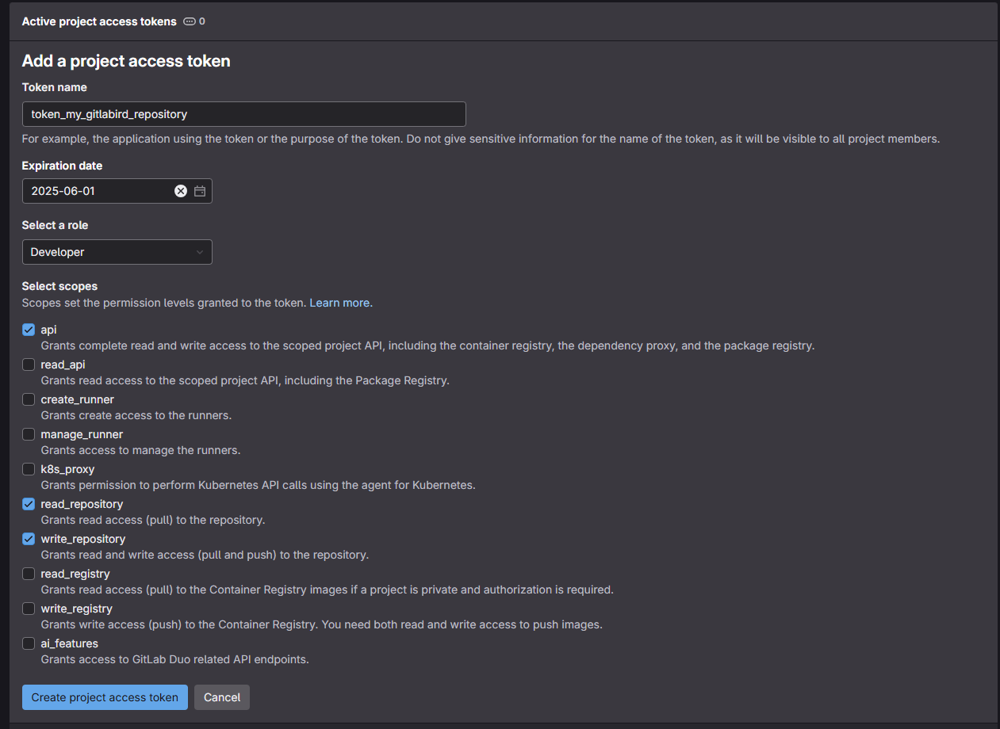
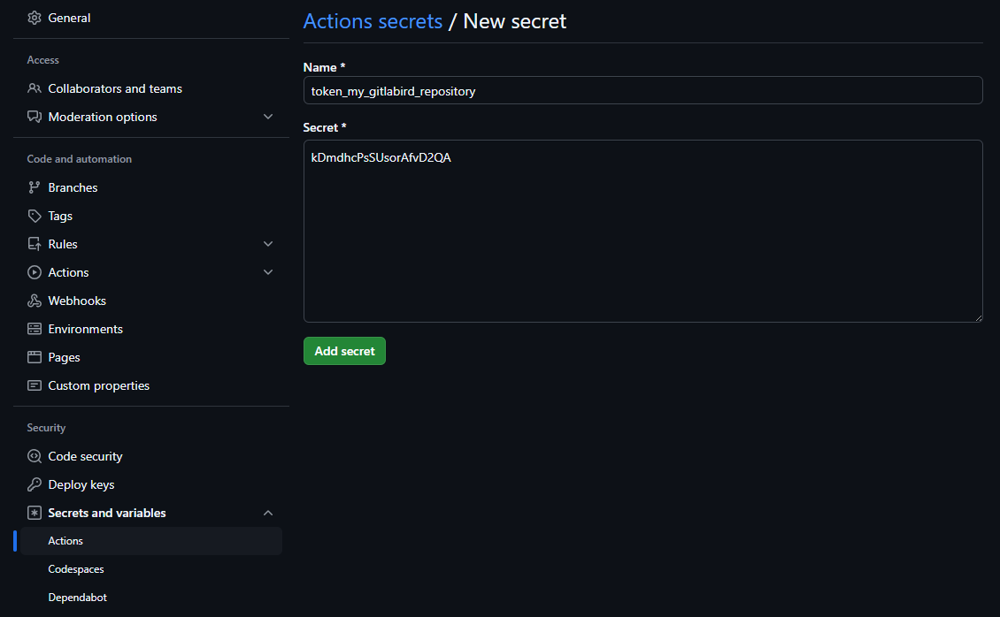
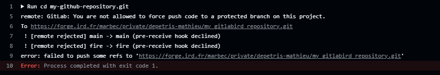
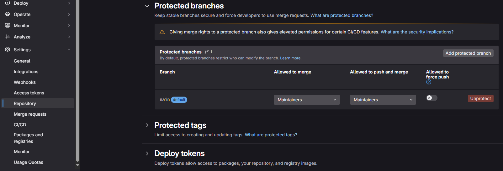

Why use a Git forge?
Once you start working in a team on pieces of code, or even on informatics developments in general, the use of a version control system quickly becomes an essential tool and a precious ally for anyone wishing to manage their work efficiently. Here, we won’t go into the features of a git, or version control system, but we will propose a solution that may help to resolve a question that is often asked, which system or forge, to turn to.
A quick look on the internet will show you that there are several forges. One of the most popular is GitHub, but others include GitLab and Bitbucket. It is also quite possible for your institute or organization to use one of these systems to host its own server (take a look here). Each system has its advantages and disadvantages, and your choice should be guided by your needs. As an example, you’ll find a quick comparison of the main forges in the table below.
| Criteria | GitHub | GitLab | Bitbucket | Gitea |
|---|---|---|---|---|
| Popularity | Very high | High | Medium | Low |
| CI/CD integrated | GitHub Actions (simple and powerful) | Very robust and flexible | Integrated, but limited | Depends on manual integration |
| Open source | No | Yes | No | Yes |
| Free Private Repository unlimited | Free Private Repository unlimited | Free Private Repository unlimited | Free Private Repository unlimited | Requires server |
| Self-hosting | No | Yes | Yes | |
| Focus private teams | Medium | Strong | Very strong (integrated with Jira) | Adapted |
Why turn to GitHub?
The procedure you are reading now offers you a solution for automatically copying the contents of a GitHub repository to the repository of another forge, such as GitLab. Without going into too much detail, and always keeping in mind that the selection of your forge should be in line with your needs, why did we choose to turn to GitHub?
The main reason is that GitHub offers by default a rich ecosystem and above all native integrations, notably via GitHub actions. These tools are highly effective allies for your developments, and greatly facilitate ongoing integration/deployment processes. Many communities, such as the R community, have already made available numerous Github actions. These can be used to automate a wide range of processes, from verifying your code to publishing documentation associated with developments/packages. What’s more, a large proportion of workflows can be centralized via GitHub, considerably reducing dependency on third-party tools.
Furthermore, GitHub is the most popular forge in the world, with a huge user community. In practical terms, it’s very difficult for any other forge to rival GitHub in terms of referencing or visibility. In addition, numerous features, such as the Discussions section and the open posting of contributions, reinforce collaboration, and its interface is often perceived as the simplest and most intuitive among forges.
In addition to being widely adopted by enterprises and open source projects, GitHub’s AI component, via its utility GitHub Copilot, can be a great help in building your resources.
Finally, the free version is already very powerful and offers the advantage of unlimited private repositories and collaboration with multiple contributors at no extra cost.
Why not just use GitHub?
In view of the previous section, we may well ask why not use only GitHub, which seems to be the smartest choice. Despite all these advantages, we mustn’t forget that GitHub remains the property of Microsoft and that, consequently, it is possible that a future change in Microsoft’s commercial policy could become penalizing or even incompatible with your work. Even if such a change is unlikely to be so “brutal” as to prevent you from taking the necessary measures, it may be wise to think about solutions that allow you to take advantage of the best of all worlds.
The aim of this procedure is to provide a solution for automatically copying an entire GitHub repository to another forge. For this tutorial, we’ll take the example of a forge GitLab hosted by IRD.
Procedure for creating a mirror between two repositories (GitHub to GitLab IRD)
Requirements and scope of the procedure
In order to best follow the procedure, we recommend that you are at least familiar with the use of a git forge, ideally GitHub. In addition, we’ll assume that you have a properly configured account on GitHub and the destination forge (in this example, the IRD GitLab). If necessary, you’ll find the e-mail address of the resource person behind this procedure at the top of the page. Don’t hesitate to contact her if you need help.
| Operating system | Functional procedure | Edition and version |
|---|---|---|
| Windows | Yes | 11 Professional, version 23H2 |
| Mac | Untested | |
| Linux | Untested |
1. Repository initialization
1.1 Creating a source repository on GitHub
First we’ll create a source repository on the GitHub forge. For the example here we’ve created a public repository named “my_github_repository” with initial settings configured globally to host R code (figure 1).

For your information, our test here creates a public repository, because we’ve taken the view that the content we’re developing is intended to be shared with everyone, and is in no way confidential or private. You can also apply this procedure to a private repository (to be tested, perhaps some parameters related to the secrets mentioned below will have to be modified), but in this case it’s a good idea to think about the veracity of using GitHub for data of a private nature. This is not to say that you should never publish private directories on GitHub, but that you should not forget that, for all its benefits, GitHub remains a Microsoft proprietary forge.
1.2 Creating a target repository on another forge
The second step is to create a second target repository on another forge. As mentioned above, we’re going to use a forge GitLab hosted by IRD, to which UMR people can have access. Figure 2 below shows an example configuration.

In contrast to our GitHub source repository configuration, our repository here is published as private. This is motivated by the need to minimize the “interactions” that users can have with this repository. You’ll see later that we’re going to automate the flow of data between our source repository (GitHub) and our target repository (IRD’s GitLab), and in the end you won’t be interacting directly on the target repository, as we will on our source repository during its lifetime. Worse still, the data flow we’re going to create will be a unidirectional flow towards our source repository, so direct modifications on this repository will surely not be saved, would risk disturbing the automation and would even be contrary to the logic of the procedure.
2. Linking the two forges
Now that we’ve created the two repositories, we need to establish a connection between them. There are several ways of doing this, but what we’re going to use here is called creating an access token. Some of you may already have performed this action, especially if you’ve made a connection between a git and Rstudio. We won’t go into the details of how to create an access token, but a more detailed procedure can be carried out if required. Just to summarize, we’re going to create an access token in the target repository’s forge, which we’ll then fill in at source repository level.
2.1 Creating an access token on the target repository
To do this, simply go to the root of our target repository (in this case, the one we’ve named “my_gitlabird_repository”). In the left-hand menu you should see a “Settings” section and an “Access tokens” sub-section. This should take you to the tab shown in figure 3.

To create a new access token, simply click on the “Add new token” tab. In the new window, you’ll find several tabs to fill in:
- “Token name”, the name of the access token. Ideally, the name should be self-explanatory, allowing you to understand what it’s for. Most of us won’t have more than one access token per repository, but it is possible to add several, in which case you need to be able to identify them.
- “Expiration date”: this is the expiry date of the access token. From a security point of view, it can be dangerous to create a token that doesn’t have an expiry date (if you click on the cross to the right of the date). Beyond the simplicity of doing this (you no longer have to worry about your connection), creating a connection via an access token will create a potential vulnerability in the security of your repository, which could serve as an entry point for potential malicious attacks. There’s no need to become paranoid, but the idea is more to think about the lifespan of your token. Is my project short-term? Is there a future deadline that is likely to alter the relevance of this token (for example, a change in the integrity of the source repository)? In concrete terms, am I going to think about deleting my access token if I no longer need it? You’re free to set your own rules. Here, for example, we’ve identified a token that will be valid until 01/05/2025.
- “Select a role”. In the case of using a personal access token to mirror actions from GitHub to GitLab, we don’t need to focus directly on roles, as the scopes in the next section are what determine the token’s permissions. However, the role associated with a personal access token may influence certain project or group access permissions. If you want to be strict, it’s best to choose a role such as “Developer”. A developer is an entity that can push code, create branches, make pull requests and manage repositories (which is what we want to do here).
- “Selected scopes”. This last section is the one that will define permissions and concretely what we can access with our token. To make a mirror, we need 3 specific rights:
- “api”: allows you to perform all API actions, including managing repositories, projects, etc.
- write_repository”: allows you to push in GitLab repositories (necessary for mirroring).
- read_repository”: allows you to read GitLab repositories (if required for configuration or verification).

Validate your configuration through the “Create project access token” button at the bottom.
The next page should show you that your access token has been validated, as well as its value. You can view it by clicking on the eye-shaped button. Just below your token, you’ll notice a message telling you that this token will only be revealed now, and it will no longer be possible to view it afterwards (for security reasons). The idea is to copy it (click on the button to the right of the eye-shaped one), store it somewhere (in a password manager, for example) and then upload it to our GitHub a source.
2.2 Setting our access token on the source repository
Now that we have our access token for our target repository, we’ll need to fill it in for our source repository. To do this, we need to go to the page for our source repository (in the example, the GitHub repository we’ve named “my_github_repository”), click on the “Settings” tab, the “Secrets and variables” section and the “Actions” sub-section. On the new page that appears, click on the “New respository secret” button in the “Repository secrets” section. All you then need to do is enter a name for this secret (as before, it must be meaningful to the user) and paste the value of your token in the “Secret” section (figure 5).

3. Creating and automating the mirroring process
3.1 Creating the GitHub action script
With our two repositories connected, we can now start work on creating the mirroring process and automating it. To do this, we’re going to create a GitHub action. We’ve talked about this before, but this type of process will enable us to run processes in the background and, above all, to automate their launch.
To do this, we have two options: (1) manually create and adapt our yaml file associated with the “GitHub Action” or (2) use a function in the package sparck which will simplify the creation process.
3.1.1 Creating and manually adapting the GitHub Action
To do this, we need to go to the root of our GitHub source repository and create a “.github” folder and a “workflows” subfolder. Inside the latter folder, we’ll copy the code below into a source code editor (such as Notepad or Visual Studio Code).
name: GitHub to GitLab IRD mirror with release assets
on:
push:
branches:
- '**'
tags:
- '**'
pull_request:
branches:
- '**'
delete:
branches:
- '**'
tags:
- '**'
release:
types:
- created
- published
- edited
- deleted
jobs:
mirror:
runs-on: ubuntu-latest
steps:
- name: Clone repository as bare
run: |
git clone --bare <github_repository_source_url>.git my-github-repository.git
- name: Set up Git
run: |
git config --global user.name "GitHub Actions"
git config --global user.email "github-actions@users.noreply.github.com"
- name: Add forge remote
run: |
cd my-github-repository.git
git remote add mirror https://oauth2:${{ secrets.<secret_token_name> }}@<git_repository_target_url>.git
- name: Push to forge
run: |
cd my-github-repository.git
git push --mirror mirror
download-release-assets:
runs-on: ubuntu-latest
needs: mirror
steps:
- name: Set up Git (Authentication)
run: |
git config --global user.name "GitHub Actions"
git config --global user.email "github-actions@users.noreply.github.com"
- name: Fetch release(s) from GitHub
id: fetch_releases
run: |
RESPONSE=$(curl -s -H "Authorization: token ${{ secrets.GITHUB_TOKEN }}" \
"https://api.github.com/repos/<github_repository_source_url_api>/releases")
RELEASE_IDS_NAMES=$(echo "$RESPONSE" | jq -r '.[] | "\(.id) \(.name)"')
if [ -z "$RELEASE_IDS_NAMES" ]; then
echo "No release found. No action required."
echo "SKIP_NEXT_STEP=true" >> $GITHUB_ENV
exit 0
fi
NUM_RELEASES=$(echo "$RELEASE_IDS_NAMES" | wc -l)
echo "Number of releases found: $NUM_RELEASES"
echo "NUM_RELEASES=$NUM_RELEASES" >> $GITHUB_ENV
RELEASE_IDS=""
RELEASE_NAMES=""
while IFS= read -r line; do
RELEASE_ID=$(echo "$line" | awk '{print $1}')
RELEASE_NAME=$(echo "$line" | awk '{print $2}')
RELEASE_IDS="$RELEASE_IDS$RELEASE_ID,"
RELEASE_NAMES="$RELEASE_NAMES$RELEASE_NAME,"
done <<< "$RELEASE_IDS_NAMES"
RELEASE_IDS=${RELEASE_IDS%,}
RELEASE_NAMES=${RELEASE_NAMES%,}
echo "RELEASE_IDS=$RELEASE_IDS" >> $GITHUB_ENV
echo "RELEASE_NAMES=$RELEASE_NAMES" >> $GITHUB_ENV
- name: Download release(s) asset(s) from GitHub
id: download_assets
if: ${{ env.SKIP_NEXT_STEP != 'true' }}
run: |
ASSETS_FOUND=false
NUM_RELEASES=${{ env.NUM_RELEASES }}
RELEASE_IDS=${{ env.RELEASE_IDS }}
RELEASE_NAMES=${{ env.RELEASE_NAMES }}
IFS=',' read -ra RELEASE_IDS_ARRAY <<< "$RELEASE_IDS"
IFS=',' read -ra RELEASE_NAMES_ARRAY <<< "$RELEASE_NAMES"
for num_release in $(seq 0 $((NUM_RELEASES - 1))); do
RELEASE_ID="${RELEASE_IDS_ARRAY[$num_release]}"
RELEASE_NAME="${RELEASE_NAMES_ARRAY[$num_release]}"
echo "Processing release ID: $RELEASE_ID with Name: $RELEASE_NAME"
ASSETS=$(curl -s \
-H "Authorization: token ${{ secrets.GITHUB_TOKEN }}" \
"https://api.github.com/repos/<github_repository_source_url_api>/releases/$RELEASE_ID/assets" \
| jq -r '.[].browser_download_url')
if [ -z "$ASSETS" ]; then
echo "No assets found for release $RELEASE_ID ($RELEASE_NAME). Skipping download step."
continue
else
ASSETS_FOUND=true
mkdir -p "release-assets/$RELEASE_ID"_"$RELEASE_NAME"
cd "release-assets/$RELEASE_ID"_"$RELEASE_NAME"
for URL in $ASSETS; do
echo "Downloading $URL"
curl -L -o "$(basename "$URL")" -H "Authorization: token ${{ secrets.GITHUB_TOKEN }}" "$URL"
done
cd -
fi
done
if [ "$ASSETS_FOUND" = false ]; then
echo "No assets found for any release. Exiting."
echo "SKIP_NEXT_STEP=true" >> $GITHUB_ENV
exit 0
fi
- name: Push asset(s) to mirror repository
id: push_mirror
if: ${{ env.SKIP_NEXT_STEP != 'true' }}
run: |
git clone https://oauth2:${{ secrets.<secret_token_name> }}@<git_repository_target_url>.git
cd test_miroir_github
if [ -d "release-assets" ]; then
echo "Removing existing release-assets directory from the mirror repository."
rm -rf release-assets
fi
echo "Copying local release-assets directory to the mirror repository."
cp -r "../release-assets" .
git add .
git commit -m "Add release assets from GitHub releases"
BRANCH_NAME=$(git symbolic-ref --short HEAD)
git push origin "$BRANCH_NAME"In this script, you’ll need to adapt certain variables to suit your environment:
- <github_repository_source_url> for the URL address of your GitHub source directory. In this example, the value is “https://github.com/umr-marbec/my_github_repository” (without quotation marks, the same applies to all subsequent variables).
- <secret_token_name> which will fill in the name of the secret we’ve identified in the GitHub source repository (see section 2.2). Here we’ll use “TOKEN_MY_GITLABIRD_REPOSITORY”. If you notice in figure 5, the name of my secret was in lower case. By default, GitHub switches all characters to uppercase.
- <git_repository_target_url> for the ULR address of your target repository, without the “https://” value at the start of the string. For example, here for the IRD forge we’ll use the value “forge.ird.fr/marbec/private/depetris-mathieu/my_gitlabird_repository”.
- <github_repository_source_url_api> for the URD address of the GitHub source directory, but in a “light” version (without “https://github.com/”). For our example, the value will be “umr-marbec/my_github_repository”.
Once you’ve correctly replaced these variables, all you have to do is save the file in YAML format (use the .yml extension to save it). For our example here, my file will be called mirror_github_to_irdgitlab.yml and it will be placed as indicated above in the “workflows” directory we’re creating on the target GitHub repository.
3.1.2 Using the add_github_action() function in the sparck R package
If you prefer a simplified approach, you can use the R package sparck and the associated function add_github_action().
To do this, start by installing it under R with the following command:
# You'll need the devtools package to download the sparck package from his GitHub repository.
# If necessary, use install.packages(“devtools”)
devtools::install_github("https://github.com/umr-marbec/sparck")
library(sparck)Next, you need to define the R working directory as your repository. If you’re using your repository for R-related code, you may have an .Rproj file in it that allows you to launch an R session directly in the repository.
The last step is to call the add_github_action() function with the configuration parameters for your environment. If we take our example for this procedure, the command line will be as follows:
add_github_action(github_action_name = "mirror_github_git",
arguments = c("github_repository_source_url" = "https://github.com/umr-marbec/my_github_repository",
"secret_token_name" = "TOKEN_MY_GITLABIRD_REPOSITORY",
"git_repository_target_url" = "https://forge.ird.fr/marbec/private/depetris-mathieu/my_gitlabird_repository"))Compared with a manual modification of our “GitHub Action” (step in 3.1.1), you’ll notice that the variables to be filled in are much “simpler” and that the function automatically takes care of formatting and creating the “.github” folder and “workflows” subfolder in your working directory (you’ll need to have the associated rights to modify your file system).
3.2 Configuring the main branch of the target repository
At this stage of the procedure, your GitHub action should be functional. However, if it launches (for example, by making a modification, such as a push, on our GitHub source repository) you should get an error like the one shown in figure 6.

This error indicates that the branch in our target repository is protected and won’t allow our process to synchronize. To resolve this problem, simply go to the target repository, as before, to the “Settings” tab, “Repository” section and “Protected branches” sub-section (figure 7).

In general, default git branches are often protected. This allows most users to automatically apply security measures to avoid inadvertently carrying out actions that could affect the integrity of the repository. In our case, we know what we want to do and we need to lift these protections in order to perform our mirror. To do this, simply click on the red “Unprotect” button on your default branch (at this stage you should only have one) and the action in the popup window that appears.
4. A final word
Congratulations, if you’ve reached this point, you should have a working mirror between your two repositories, which launches its associated process for each modification on the source repository.
A few tips for the future:
- Don’t hesitate to give us feedback on this procedure, especially if you have any suggestions for improvement. For example, testing this procedure on several operating systems, or with specifications other than those outlined here (such as testing on a private source repository) would be very enriching feedback.
- During ad hoc testing, we noted a number of failures in the mirroring process. In concrete terms, your “ordinary” actions linked to code integration, branch creation or most basic actions did not show any failures. On the other hand, when you start to perform realeases, add assets to them, play a little with the limits by deleting them and the associated tags …., sometimes the mirror doesn’t trigger. Normally this is quickly rectified by the next mirror on a commit, for example, but please don’t hesitate to report failures so that we can improve the procedure.